Project 4: Image Warping and Mosaicing
Part A: Image Warping and Mosaicing
Intro: a short overview of part A. Take two or more photos, recover the homographies between them, warp them into alignment, and blend them into a mosaic. For this part, our goal is to warp multiple images, then stitch them together to make a nice mosaic at the end! First, we can take two pictures of the same scene but rotating a little bit between each photo. Then, we can find the homography by finding correspondences between the images, then use that homography by applying interpolation and transforming the second image to fit onto a source image. Finally, we can compile all of these images onto one large photo and use some blending techniques to make it look pretty!
A.1 Shoot the Pictures
I shot these photos by simply rotating my camera slightly between each one, making sure not to move it. This is because if we translate the center of projection (camera)
in any way, it makes it so the homography might not work. The homography is a mapping from pixel coordinates in one image to another, if we add a translation
that changes the depth between images in some way, it's going to mess with our mapping. This is because the shift of a pixel also depends on its depth,
so if we have varying depth between images, a single mapping cannot map to both depths.
I chose to shoot here because there's a lot of features to pick correspondences with (grid in building, people who I asked to stay still, park with benches and
other sharp edges). They are also all just places I'm at in my daily life.
Set 1: Hanging out in Brian's living room
Set 2: Soda Hall at night, coming back from lab
Set 3: A Park!
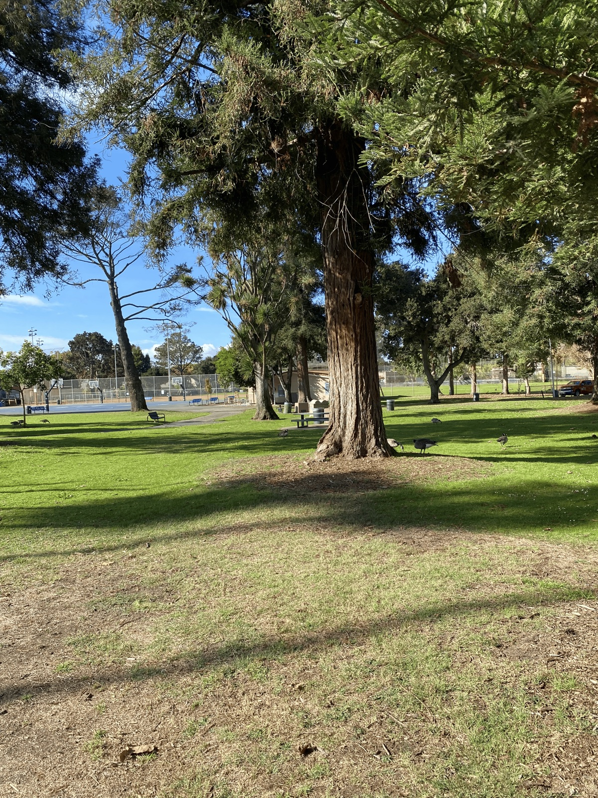
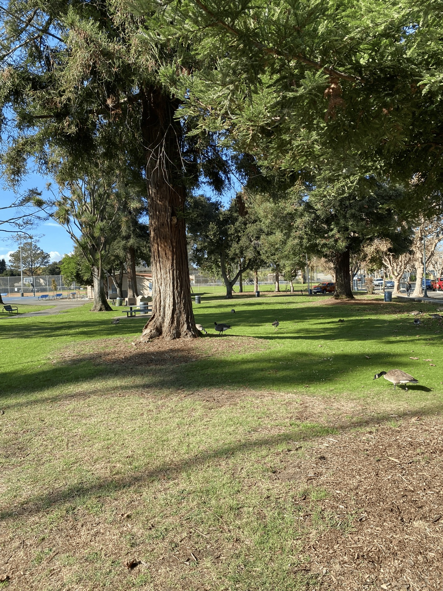
A.2 Recover Homographies
To compute the homography, we build a system of equations! How do we do this? Well we know the homography is a 3x3 matrix (3x3 since it transforms homogeneous coords)
and we also know that the last term is 1 (can only recover homographies up to a scale, can just set it to 1). That leaves us with 8 unknowns. And we know that:
H^(3x3) * [x1, y1, 1]^T = [x2, y2, z]^T
We know both the original image coords and the resultant image coords, we just want to solve for H.
What we can do is multiply and expand out, and since h33 is just 1 we can take the final x2 and y2 term and move them on
the other side.
We also divide by the scale factor to get the normalized x2 and y2. I got that from this YT video here. But from here if you sub in 1 for h33, multiply out and isolate x2 and y2 (xd and yd in the picture) onto one side, and then organize the h values into a row vector we can get the general form:
Ultimately, we get a linear equation with the form Ah = b, where A is matrix composed of 1s, 0s, and points between
our images, h is our homography, and b is the coordinates after the transformation. From there we can take the least squares
estimate to find h.
Below, you can also see my correspondences. I didn't really have any specific reason for choosing them, but I did focus on picking sharp edges
and pixels with little ambiguity. For example, I stayed away from picking rounded edges, and I chose the corners of some of the benches and basketball courts.
System of Equations, values using the park correspondences
Correspondences


Recovered Homography
A.3 Warp the Images
How does nearest neighbor and bilinear interpolation work? Well its actually pretty simple.
We start with a grid of coordinates that represent the destination image (same size as source image usually). From there,
we can take each coordinate and multiply it by the inverse homography to see where it lands in the source image.
Now, we can just set the pixel value at the destination image as the pixel value sampled from the source image. Since the source image
is not guarenteed to be an integer and may land in between pixels, we can simply round the coordinates it ends up in and sample from there.
Since rounding gets the nearest coordinate, it makes this nearest neighbor interpolation.
Bilinear interpolation is a lot more complicated. Based on where the pixel lands, we can find the distances
between each of the four corners which are actual integer values. With those distances, we can create rectangular areas, where a pixels'
contribution is the rectangle formed opposite from the sampled point (since we want the pixel that the mapping is closest to to have the biggest contribution,
so we take the rectangle formed opposite of it since that is the rectangle with the largest area). Once we know the contributions of each pixel,
we can just multiply those weights by the pixel values in the source image and add those together to get the final image.
There's some other stuff I have too such as masking the pixels that get sourced to outside the image, and also clipping the indices
to prevent indexing errors which are methods shown in both interpolations.
Rectification 1: Cube


Rectification 2: PCB


Nearest Neighbor vs. Bilinear


Zooming in, we can tell the difference between the nearest neighbors interpolation and the bilinear interpolation. The bilinear interpolation
is much more smoother compared to the nearest neighbor interpolation. This is because the bilinear interpolation takes the average of the surrounding
pixels while nearest neighbor just inherits its nearest pixels value back in the source image. Since bilinear interpolation takes the average, it acts as a low pass
filter in a way, smoothing the output. In return, the bilinear interpolation is four times as slow (makes sense since you have to deal with 4x as many pixels).
Bilinear interpolation was also a lot more harder to implement.
A.4 Blend the Images into a Mosaic
Now, we basically have all the components we need to create a mosaic. We can take one image as
the reference image, and then warp the other images to it by finding the homography between them.
Once we do that, we can just map all of them onto a larger blank image and line them up to fit within our bounding box. Once they all fit,
we can apply the multiresolution blending (with two stacks as listed in the project page) we used in Project 2.
Here are the results!!!
Mosaic 1: Brian's Room
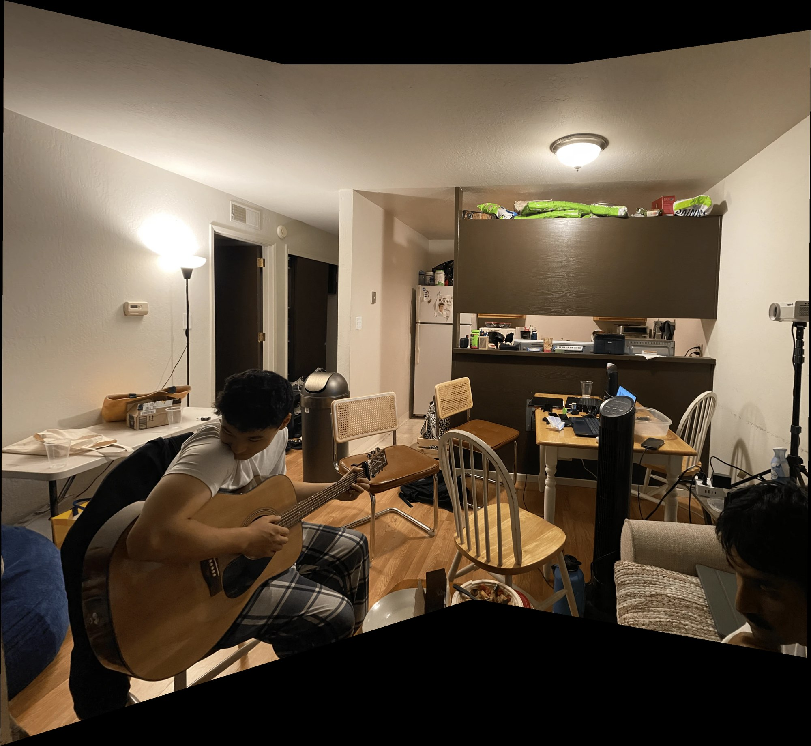
Mosaic 2: Soda Hall
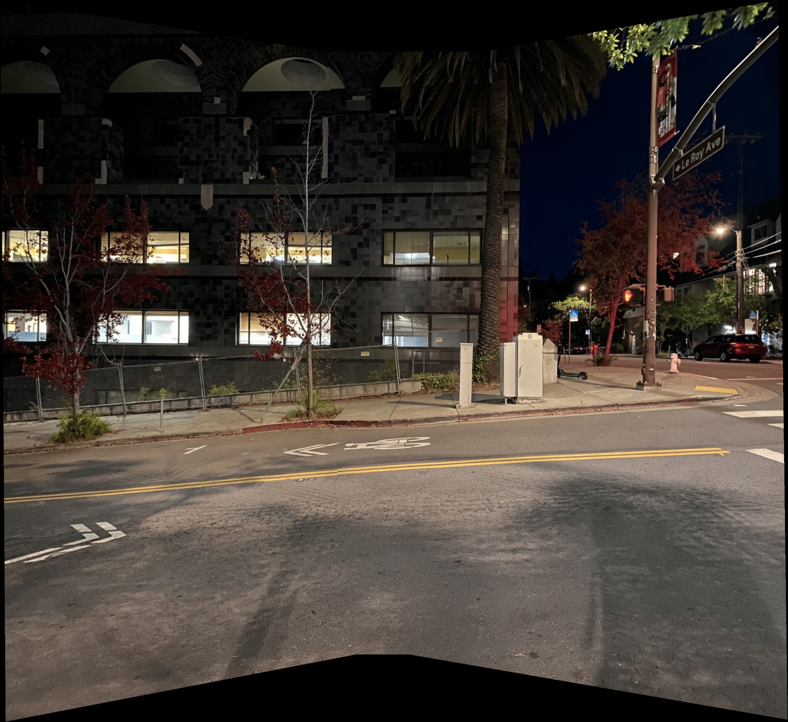
Mosaic 3: Park
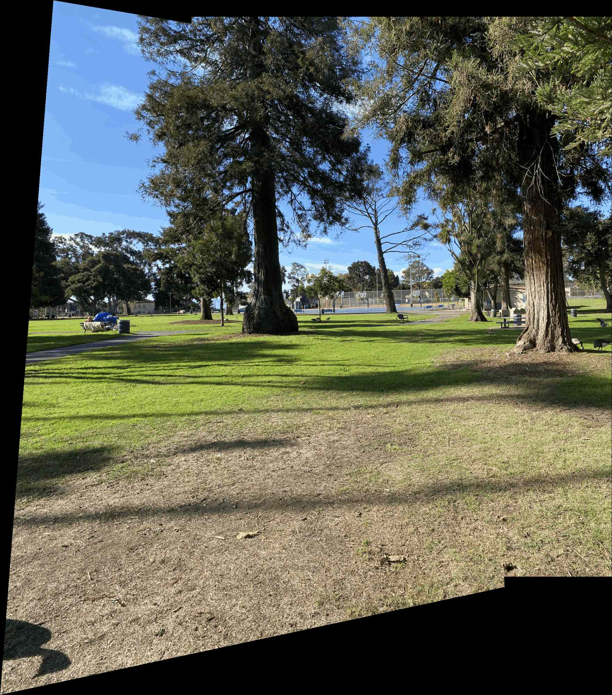
Part A Takeaways
I think the greatest takeaway I got from this class is how a homography and bilinear interpolation works. Because I had an assignment in CS189 where I had to implement bilinear interpolation but I didn't really understand what I was doing, and also the way we did it was sort of chud because we did the forward transformation which left a bunch of holes. But overall, I think it's really cool and the ideas used in this project I feel like are very applicable. However, I'm mainly looking forward to then next part of the project where we use RANSAC and feature matching, because I've been using that in my robotics class and it's cool to see it used in another one of my classes. I also really enjoyed Prof. Efros' lecture on that section because it was really easy to digest.
Part B: Feature Matching for Autostitching
Hey it's part B! What do we do here? Well all the manual point finding that we did in part A we're trying to automate! Isn't that fun! The process is actually pretty interesting and it's basically getting a bunch of points and running them through a series of rigorous filters to make sure they're the right points. First, we can apply Harris corner detection to get a bunch of corners that we can use as possible points. We threshold those to only keep points that have a certain intensity change. The points that get past the filter we apply adaptive non maximal suppression to spread them out evenly around the image. After we spread the points out, we take a patch around that point and turn that into a feature descriptor, or basically a vector. Once we have our feature desciptor, we apply the same process to another image and try to match feature descriptors together, filtering out the ones that don't match well enough. Once we have all of that, we finally run those points through RANSAC to try and get a best match of points. Once we're set on our points, we can apply the same processes we did in part A to get a final mosaic!
B.1 Harris Corner Detection
How does the Harris detector work? The Harris detector works by sliding a convolution over the image and seeing where the intensity changes
the most in all directions. Since a true corner would do so. An edge would only change in one direction. Thankfully, the project
page has some starter code that provides some very useful functions for us, including a harris detector function! Once we have our intensity changes through,
we can threshold all the points. You can see that with a threshold of only 400, a lot of points start to show through. With a 10k threshold a reasonable amount of
points come through. I actually had some trouble with this and eventually kept my threshold at 400 since a 10k threshold concentrated the points too much and it
made ANMS worthless
Check them out below! Also I didn't know you can change the dot size until later.
Now for the ANMS step! How it works is that we want a very strong point to suppress other points surrounding it. What we can do is for each point, find the intensity
of the points surrounding it. Then what we can do is mark down the distance that point has to go (basically radius) to find a point that has a higher intensity
than itself. Now, we can sort the points by their radius with larger radii being first in the list. Finally, we can cull points past a certain number, so with our list of
points only keep the first couple hundred or so. I decided on choosing 500 because I remember seeing it in lecture or like the same number in the original MOPS paper.
Check out how it works! It successfully distributes the points evenly across the image, with the strong points being kept and clusters of points being eliminated.
Harris Corners (without ANMS)
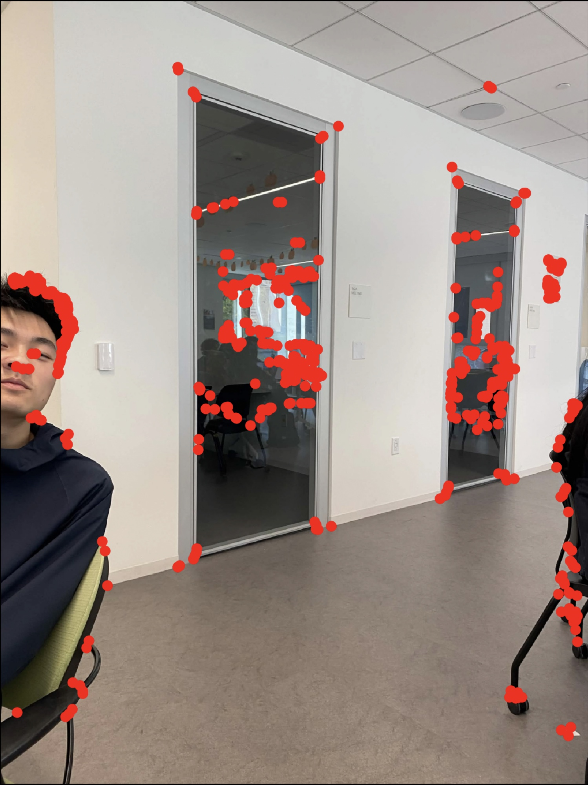
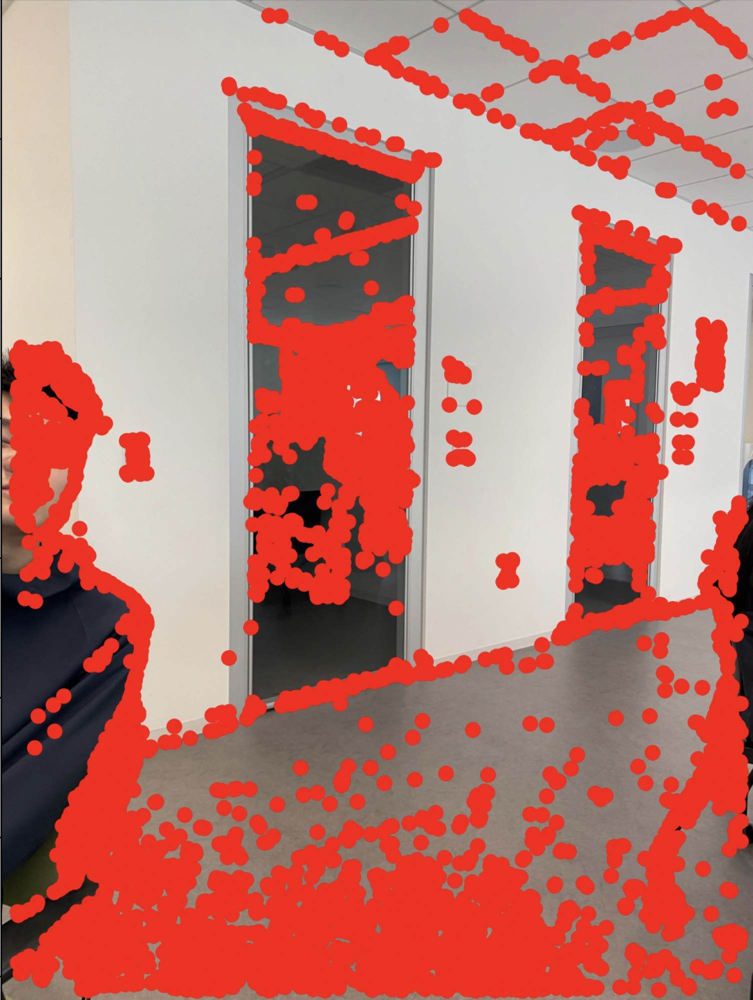
After ANMS
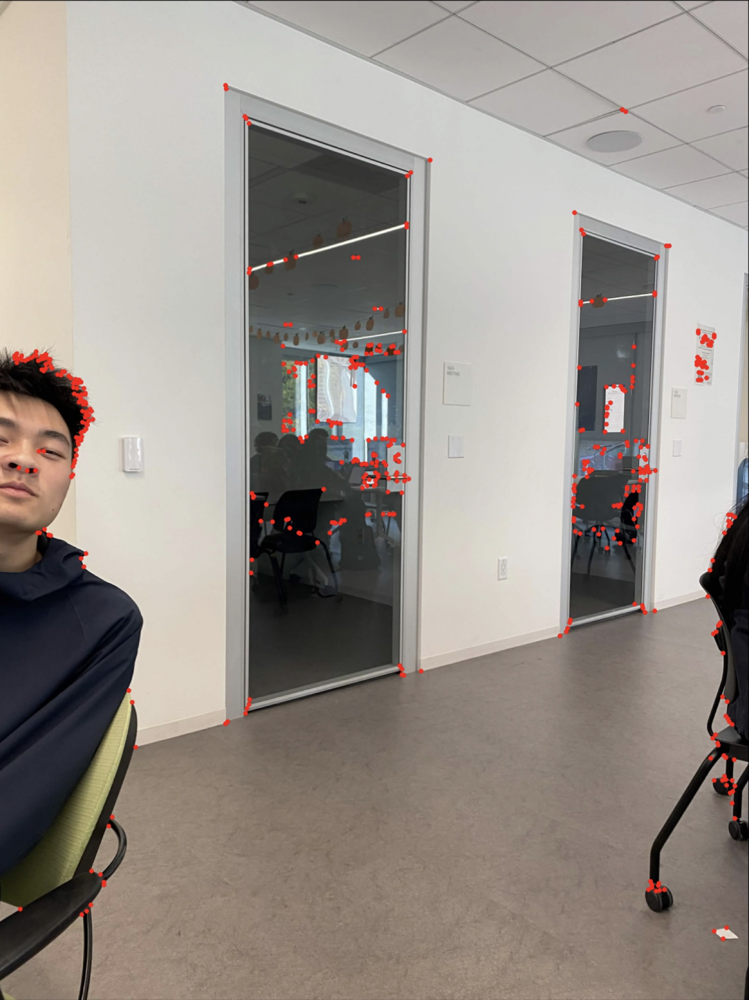
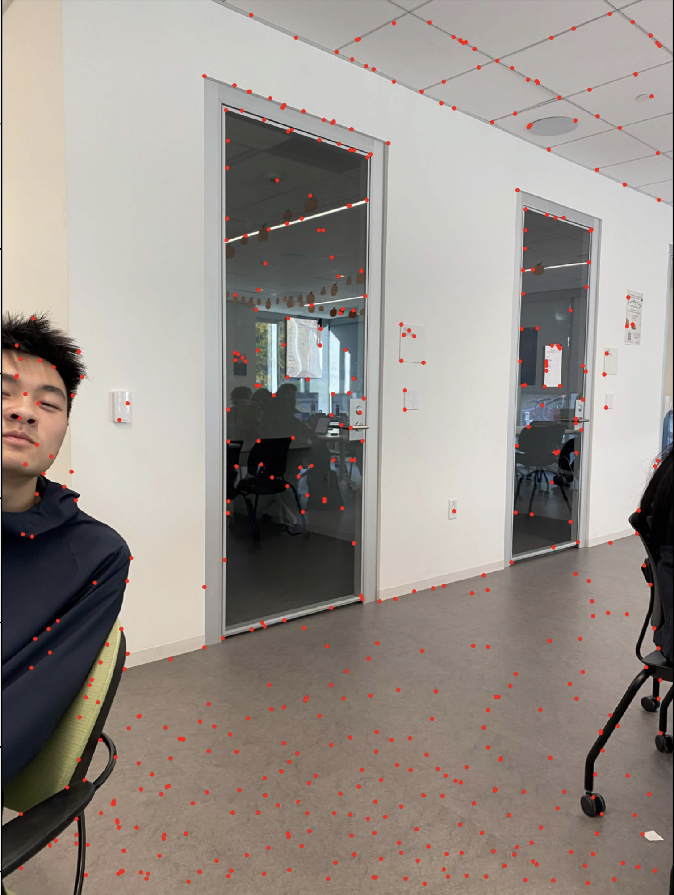
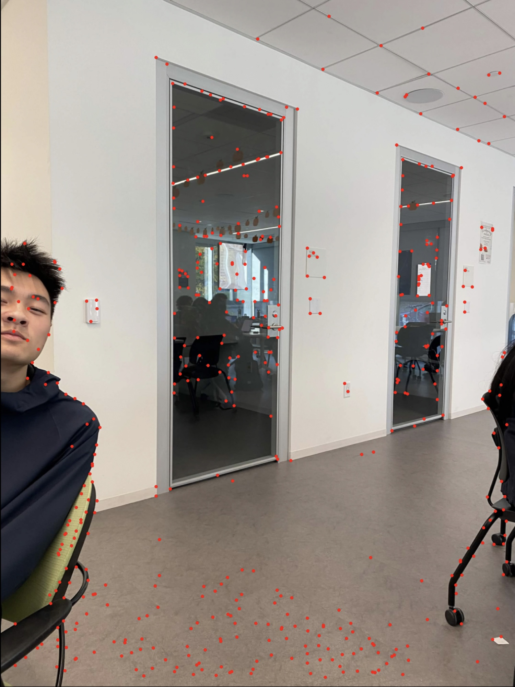
B.2 Feature Descriptor Extraction
Now that we have our set of points, how do we try to find matches between iamges? What we do is for each point, we can take a patch surrounding it. Once we get that patch, we just blur, downsample, normalize, and then flatten it to create a vector. We downsample by 5 because we start with a 40x40 image and want to go down to 5x5. Then we can normalize a patch by subtracting the mean of the patch and dividing by its standard deviation. Then flatten it to just make a vector. Finally, we can obtain a set of feature desciptors to compare between different images!
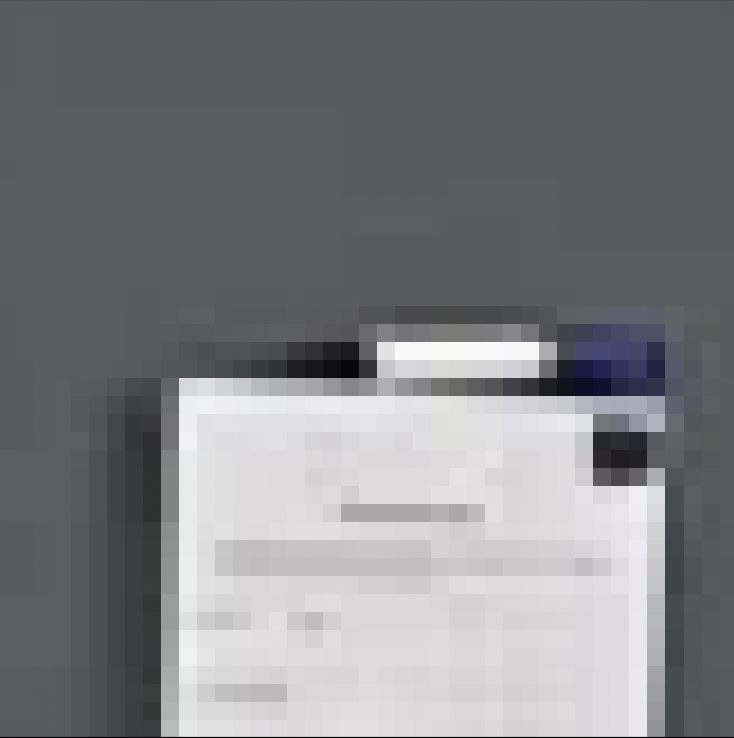
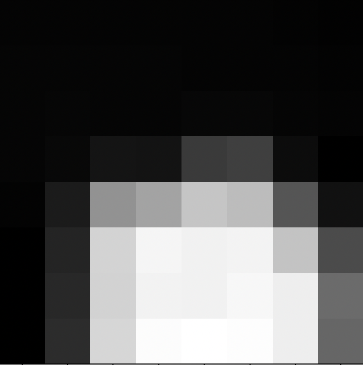
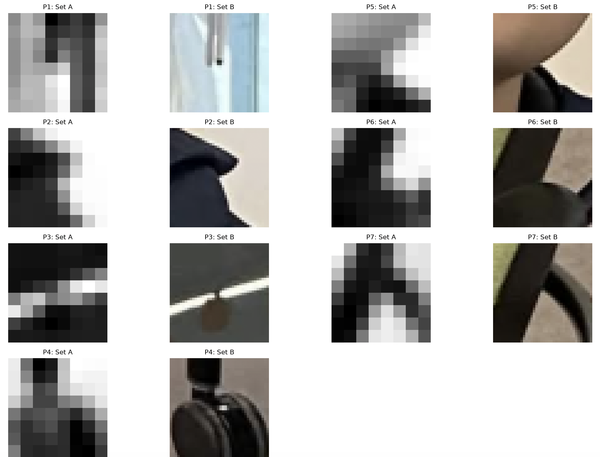
B.3 Feature Matching
We can find the match desciptors between images by doing nearest neighbors and taking the classic L2 distance between the two feature descriptors!
We can utilize the handy dandy dist2 function to make a grid of L2 distances between the two feature arrays and getting the ones that are the closest together through sorting.
After that, we compute the ratio between the first nearest neighbor and the second nearest neighbor and keep ones with a high ratio between them. We do this because
if the first nearest neighbor is super high compared to its second one, then we can have a high confidence that that point is the correct correspondence. If the ratio
is very low, that means the confidence is not that high and it could be like a cluster of nearby points or just two points that happen to look similar.
I ended up picking a threshold of 0.7 because I think in the original SIFT paper they used 0.8, but I chose it to be a little stricter so 0.7 it is.
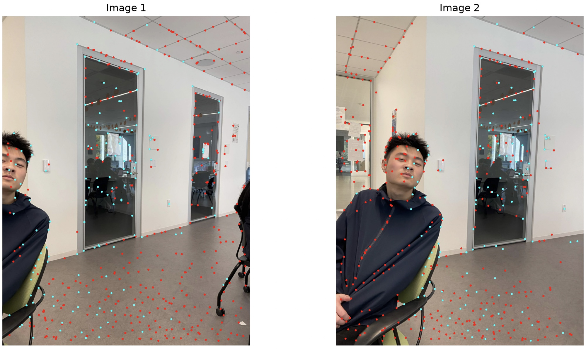
B.4 RANSAC for Robust Homography
RANSAC, the best part! I actually used this for 106a but tbh I didn't really know how it worked until now, and it's pretty cool! For a randomly sampled
algorithm it actually performs very well. How it works is that it randomly selects a set of points (in this case 4 points), and then we can compute a homography from that.
Once we get that homography, we transform all possible matches with that homography and see how many points line up between images! We save the number of matches (inliers) and continue
randomly sampling points and finding homographies. After a set amount of iterations doing this, we save the points and homography that resulted in the highest number of inliers.
Now we can use this set of points to create the mosaics we did in part A!
My inlier threshold is 2.0, so after being transformed a pixel has to land within a 2.0 distance of where it's supposed to be. Also my number of RANSAC iterations is 2000
to really be sure that I have a good set of points. I don't really think I need that much, but RANSAC is random and it's best to be prepared, and to be honest
this assignment is due in like 20 mins and I'm too lazy to iterate through different RANSAC iteration numbers, 2000 was just a number I searched up online.
Mosaic 1: Aldrich
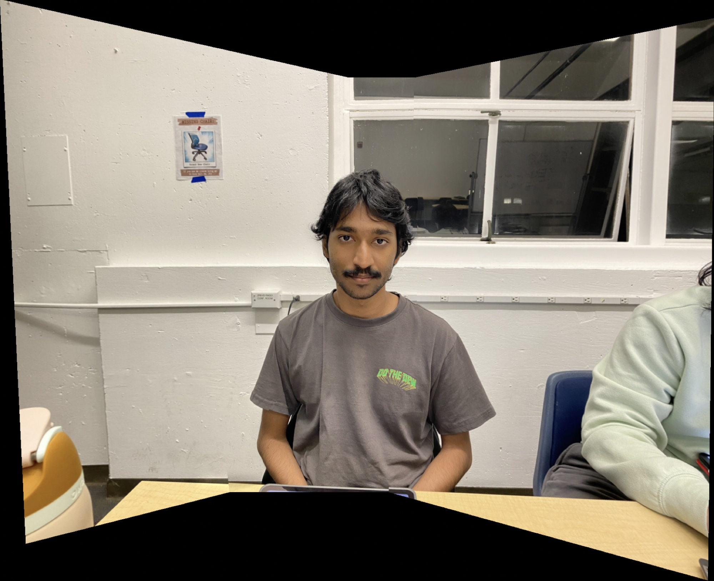
Mosaic 2: Alvin
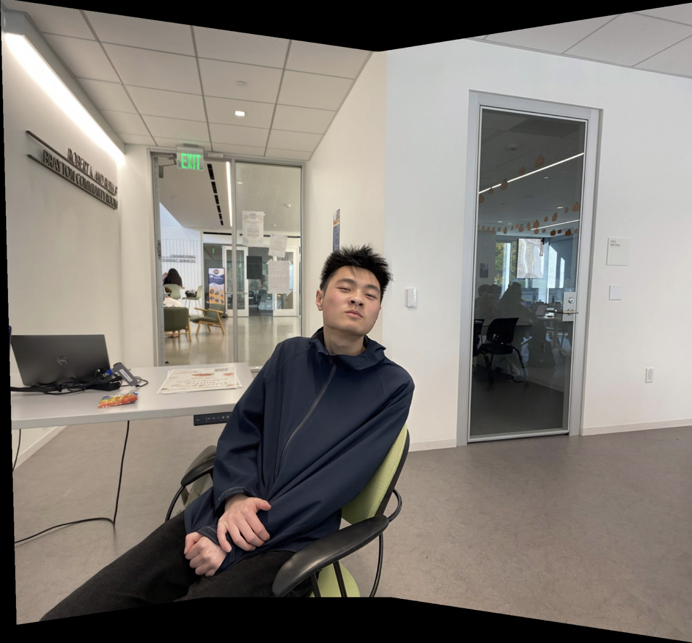
Mosaic 3: Cory Hall
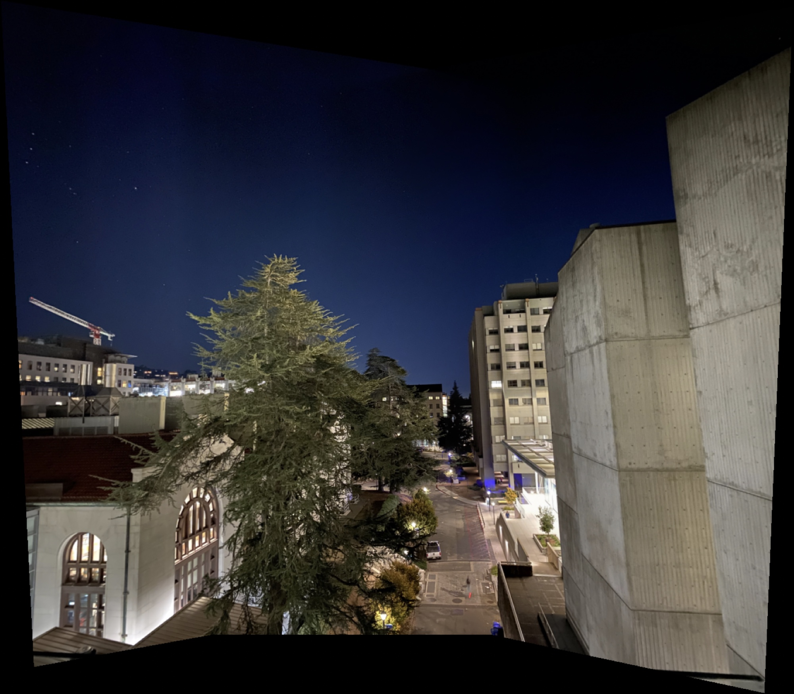
Manual vs. Automatic: Park
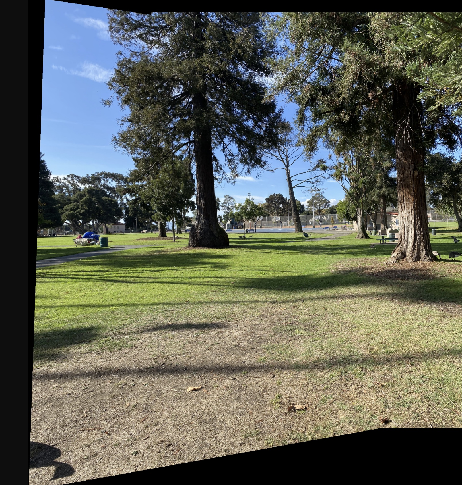
Honestly I thought I did pretty well with matching the park images together, but apparantly not and RANSAC and automatic feature matching is just goated like that. You can actually see a mistake that it makes in the hand picked homography near the bottom with the leaf being cut off, but in the automatic feature matching one the bottom is fixed and the leaf is included. I'm assuming it's because I didn't really cover that part of the image in my handpicked points so that section of the image couldn't really be accounted for in the homography.
Part B Takeaways
I think the biggest thing I took away from this project was how RANSAC actually works and how ANMS works! I think it's really cool and I feel like this kind of knowledge / these kinds of methods are applicable in other fields that I'm interested in. I mean like, I'm using RANSAC in robotics right now so it's fun to see the same topics in other classes that I'm in. Overall, very awesome project and it's due in like 8 mins holy crap.